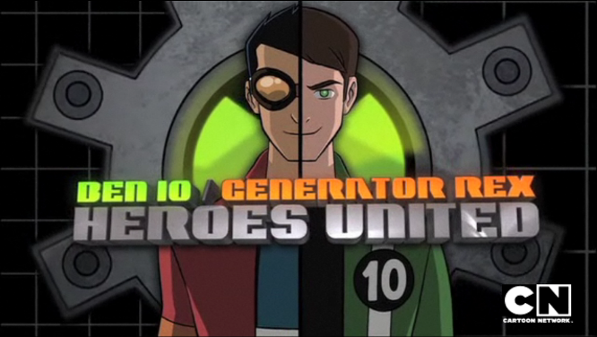

Crossover
Ben 10 e Generator Rex Juntos?
Você sabia que o Ben 10 aparece em um episódio especial de crossover com o Generator Rex? O episódio se chama "Ben 10/Generator Rex: Heroes United" e mostra os dois heróis se unindo para combater uma ameaça interdimensional.
Nesse episódio, Ben usa o Omnitrix para se transformar e ajudar Rex em batalhas épicas contra EVOs. Além da ação intensa, os fãs puderam ver como os estilos e personalidades dos dois personagens se complementam, criando um dos encontros mais icônicos da história da animação do Cartoon Network.
Curiosamente, o visual do episódio foi levemente adaptado para equilibrar o estilo dos dois universos, e houve colaboração entre as equipes de produção dos dois desenhos. A ideia era justamente explorar o conceito de um multiverso animado.
